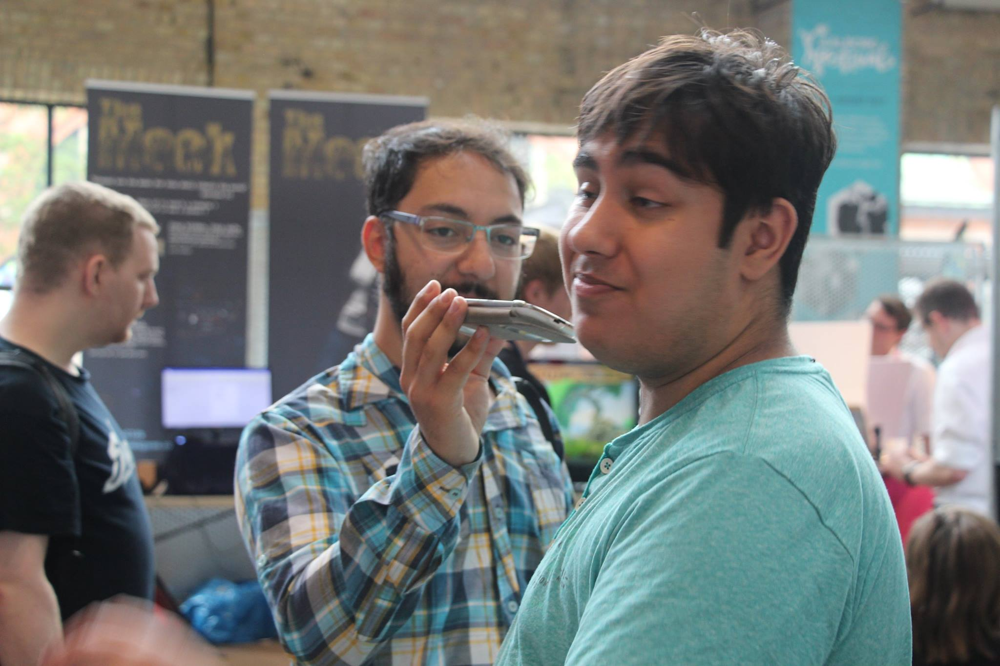

Velkommen til min portfolio side
Velkommen til min hjem
På den her hjemmeside vil du finde ud hvem jeg er og hvad jeg laver.
Så lad mig spørge hvad søger du efter?
Description
My name is Hamun. Since I was a child I had a big passion for learning. I love school, but life made me realize that you can not only work hard to achive something. You have to adapt yourself to everything. That is why I wanted to focus on many aspects of programming. Both front-end and back-end. I learned HTML and CSS at the age of 12. I moved on to learn .Net and ASP.NET in C#. As a hobby I made youtube videoes since 2007. I made tutorials, guides, vlogs, etc. I wanted to help people with my knowledge, and hopefully be better in learning on the way. I also made Anime Music Videoes (AMV), where I combine Japanense Cartoons with music. Since then I moved on to my new channel where I make danish videoes, with the purpose of helping other people with anything I know.
Om mig

The present:
I have been studying for computer science (Datamatiker in danish) for 3 semesters. I have made many systems and applications, to know how they are made now. I can both work back-end and front-end now. Click the "Portfolio" menu to see what I have made. I am a teaching assistent for "matematik centeret" in Aalborg. I help people with mathematical problems and learn them how to solve them. I have been a part of many projects and one of the most noticeable is the Game Jam I have been in where we made a Game about Satans Unicorn Hero.
The future:
One of my biggest dreams is to learn everthing about computers. Both Hardware and software. Some people say that "A jack of all trades, master of none". Therefore I will solely focus on the front-end. But I have many knowledge about back-end that I can around many workplaces. I am mosly also an expert in errorhandling and faulty code repairing. I live to learn. I will never say no to learning something and have motivation for learning something new each day.
Mit CV
De ting jeg er god til er følgende


Projects that I am working on:
Animecons A list of anime conventions in Denmark
Projects that are done or on hold:
Super Shift-Shaper Ludum Dare Game Jam 35
Basic Comment Site A basic site utilizing bootstrap and jquery
A simple soundboard. Press button 6 to shut all sounds. Made with action script 3 Get the source code here: Main.as EmbeddedSoundClass.as
biobooking Our third semester project. A cinema booking system.
Made a game at Game Jam #CreateJam2015 with other people Midly Retarded Unicorn From Hell
Run, frankensteins monster run! Ludum Dare Game Jam 33